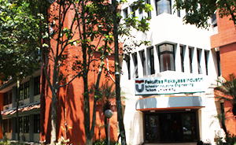

Pada ajang Vocomfest (Vocational Computer Festival) 2017 yang berlangsung 16 April 2017 lalu di Universitas Gajah Mada (UGM) Yogyakarta, Vocomfest merupakan salah satu acara terbesar yang diselenggarakan oleh Himpunan Mahasiswa Ilmu Komputer dan Sistem Informasi SV UGM. Mengangkat tema “Creating Smart Citizen for Social Welfare with Technology” Pada acara ini tim Notice Telkom University berhasil meraih menjadi favorite apps Mobile Apps Development Competition.
Pihak kemahasiswaan Fakultas Rekayasa Industri Telkom University Faishal Mufied Al Anshary, S.Kom., M.Sc mengatakan selain 3 prestasi tersebut 1 lagi prestasi yang diraih oleh mahasiswa FRI di bulan April ini yakni Dani Aji dan yulian berhasil meraih juara 3 Indonesia Islamic business plan competition 2017 yang berlangsung sejak Februari dan diumumkan pada 16 April 2017 lalu di Politeknik Elektronika Negeri Surabaya (PENS) “seluruh prestasi mahasiswa yang sudah diraih sepanjang April ini merupakan kebanggaan bagi FRI, karena bisa membawa nama baik FRI khususnya Telkom University” ucapnya. Faishal berharap agar mahasiswa Telkom University bisa terus berkompetisi baik secara Nasional dan Internasional agar bisa terus mengharumkan nama baik almamater. “selain itu saya berharap agar mahasiswa Telkom Unviersity juga bisa mewariskan semangat kompetisi kepada adik kelas nya agar selalu ada regenerasi dalam setiap kompetisi” ucap Faishal.